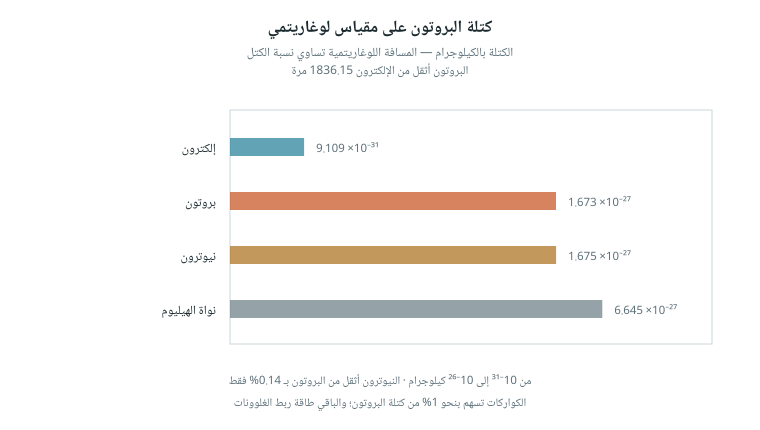

البروتون
Proton
جسيم نووي موجب الشحنة مقدارها شحنة الإلكترون نفسها بإشارة مخالفة، وكتلته الساكنة 1.67262192369×10⁻²⁷ كيلوغرام، أي 1836.15 ضعف كتلة الإلكترون. عدد البروتونات في النواة هو العدد الذرّي الذي يحدّد العنصر لا نظيره.
البروتون مكوّن النواة الموجب، وبه يُعرَّف العنصر: كل نواة بعدد بروتونات معيّن تنتمي إلى عنصر واحد، وتغيير هذا العدد يعني تحوّلًا نوويًّا لا تفاعلًا كيميائيًّا. شحنته +1.602176634×10⁻¹⁹ كولوم، وهي الشحنة الأولية الموجبة التي تُقاس بها شحنات الأجسام.
والبروتون ليس جسيمًا أوليًّا في النموذج القياسي الحديث: يتكوّن من ثلاثة كواركات (اثنان علويان وواحد سفلي) تربطها غلوونات، وكتلتها الساكنة لا تشكّل إلا نحو 1% من كتلة البروتون، والباقي طاقة ارتباط في الكروموديناميكا الكمّية. وهذا يفسّر كونه أثقل من مجموع مكوّناته الحرة، ويجعل كتلته نتيجة بنية لا نتيجة جمع.
كيف تعمل الظاهرة؟
تماسك البروتون داخل النواة يحتاج قوة أقوى بمئة مرة من الكهرومغناطيسية، وهي القوة الشديدة التي تعمل بين النيوكليونات عبر تبادل بيونات وتُقارَب بكمون يوكاوا. وتغلب هذه القوة تنافر البروتونات الموجب عند المسافات القصيرة جدًّا، ثم تصير جاذبة عند مسافة نحو فمتومتر واحد، وتتلاشى بعدها. أما داخل البروتون نفسه فالقوة الشديدة بين الكواركات تزيد مع المسافة، فلا تُرى كوارك حرًّا، بل تظهر كريات من الهادرونات عند التصادم العالي الطاقة.
العلاقة بالأرقام
كتلة البروتون 1.67262192369×10⁻²⁷ كيلوغرام، وهي 938.272 ميجا إلكترون فولت من الطاقة. والنيوترون أثقل منه بـ2.305×10⁻³⁰ كيلوغرام أي 1.293 ميجا إلكترون فولت، وهذا الفرق هو سبب تحلّل النيوترون الحر إلى بروتون وإلكترون ونيوترينو بعمر نصف 611 ثانية. وتعادل كتلة البروتون 1836.15 ضعف كتلة الإلكترون، ولهذا تنحصر كتلة الذرة كلها في النواة بينما يشغل الإلكترون الحجم.
مفاهيم متقاربة
البروتون ليس ذرة الهيدروجين: نواة الهيدروجين بروتون واحد بلا إلكترون، وإضافة إلكترون تُنتج ذرة الهيدروجين المتعادلة التي لها خواص كيميائية كاملة. والبروتون ليس فوتونًا ولا نيوترونًا: الفوتون بلا كتلة سكون وبلا شحنة، والنيوترون متعادل وأثقل بقليل ويستقر داخل النواة فقط. والعدد الذرّي ليس عدد الكتلة: تغيير عدد النيوترونات ينتج نظيرًا للعنصر نفسه، أما تغيير عدد البروتونات فينتج عنصرًا آخر.
حدود التطبيق
البروتون الحر مستقر نظريًّا لأن أثقل باريون يمكنه التحلّل إلى بوزيترون وبيونات، لكن هذا التحلّل لم يُرصد قطّ وحدّه الأدنى العملي يتجاوز 10³⁴ سنة، فيُعامَل مستقرًّا. وقيمته المقيسة مرتبطة بطريقة القياس: كتلة البروتون في ذرّة تُقاس بمطياف الكتلة بذرّة مرجعية هي الكربون-12، وأي إعادة تعريف للكيلوغرام بعد 2019 لا تغيّر ثوابته بل تُشتقّ منها. ولا تنطبق عليه صفة «جسيم أولي» بمعنى النموذج القياسي إلا بوصفه حالة ارتباط.

| الكمية | القيمة | المصدر |
|---|---|---|
| كتلة سكون البروتون | 1.67262192369×10⁻²⁷ كيلوغرام | [1] |
| نسبة كتلة البروتون إلى الإلكترون | 1836.15 بلا وحدة | [1] |
| شحنة البروتون الأولية | +1.602176634×10⁻¹⁹ كولوم | [2] |
| فرق كتلة النيوترون عن البروتون | 1.293 ميجا إلكترون فولت | [3] |
المصادر
- 1 CODATA Recommended Values of the Fundamental Physical Constants: proton mass and proton-electron mass ratio — NIST, National Institute of Standards and Technology. physics.nist.gov/cuu/Constants/ · اطُّلع عليه 2026-11-16
- 2 Proton — Encyclopaedia Britannica. www.britannica.com/science/proton-subatomic-particle · اطُّلع عليه 2026-11-16
- 3 Review of Particle Physics — neutron mean life and mass difference — Particle Data Group. pdg.lbl.gov/ · اطُّلع عليه 2026-11-16
استشهد بهذا المصطلح
الصيغتان مبنيتان من بيانات الصفحة نفسها: العنوان والتاريخ ورابط النسخة المنشورة.
البروتون — Proton. (2026). ديوان المعرفة — انفراد. https://infiradev.com/diwan/terms/proton.html
@misc{proton2026,
title = {البروتون},
titleaddon = {Proton},
howpublished = {{ديوان المعرفة — انفراد} — مرجع علمي عربي},
year = {2026},
url = {https://infiradev.com/diwan/terms/proton.html},
urldate = {2026-11-16},
note = {مراجعة علمية: تحرير انفراد الآلي — نُشر بأمر عبدالله الهويدي}
}
راجعه: تحرير انفراد الآلي — نُشر بأمر عبدالله الهويدي · 2026-11-16 · آخر تحديث 2026-11-16